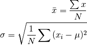

Task 3¶
The MSD function takes numpy array and axis to calculate the mean and the standard deviation.
The mean and standard deviation equations are as follow:

where N is the number of x.
-
task3.MSD(nparr, ax=0)¶ Calculate mean and standard deviation of numpy array by axis
- Parameters::
- nparr : array_like
Array containing numbers
- ax : int, optional (default=0)
Axis along which means and standard deviations are computed.
- Returns::
- m,std : tuple
tuple of mean and standard deviation of the input array in terms of the axis.
- Raises::
- ValueError
if the given axis is not None or not 0 or 1.